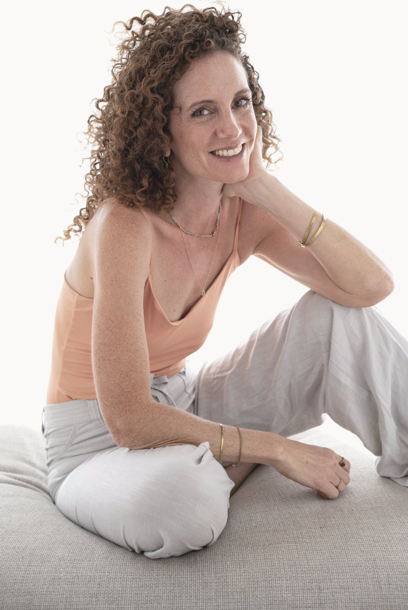
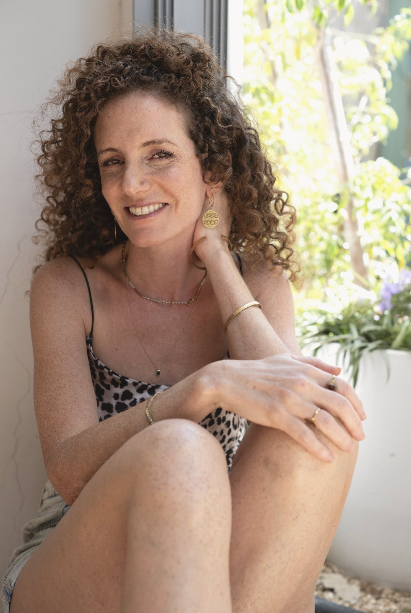
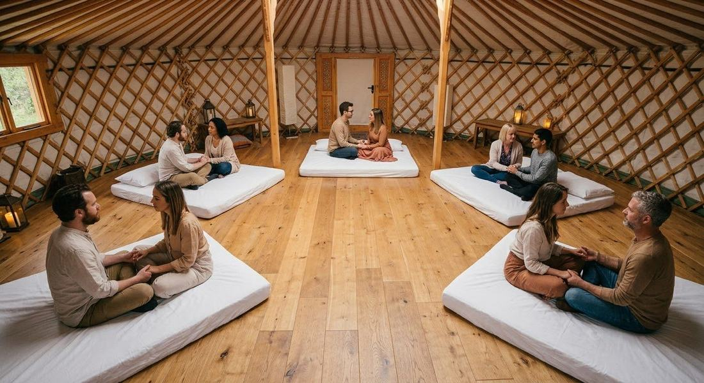
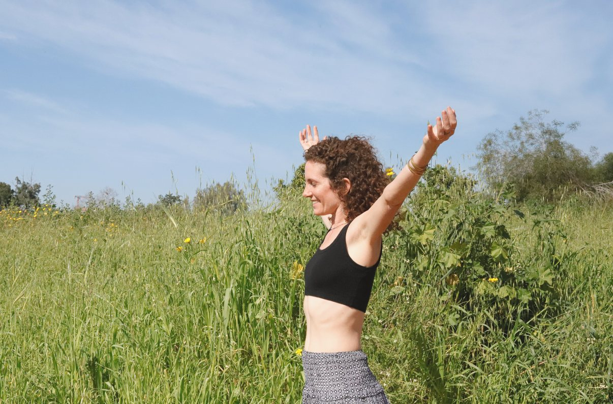
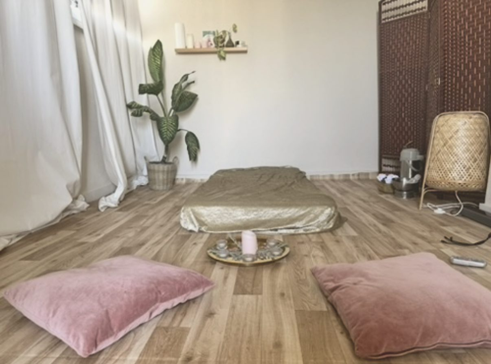
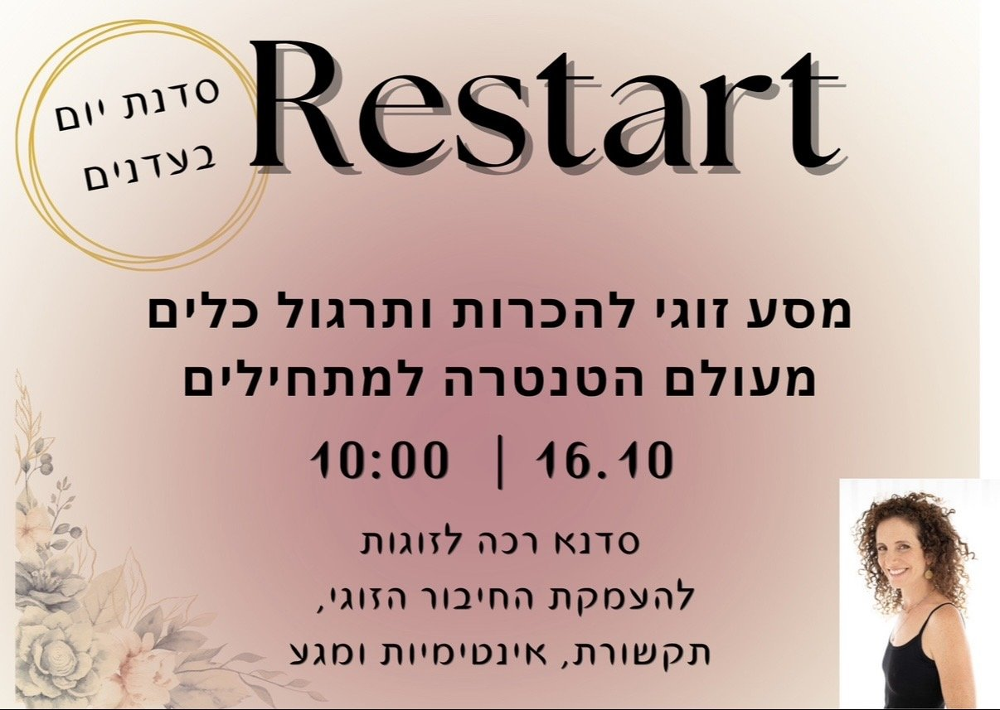
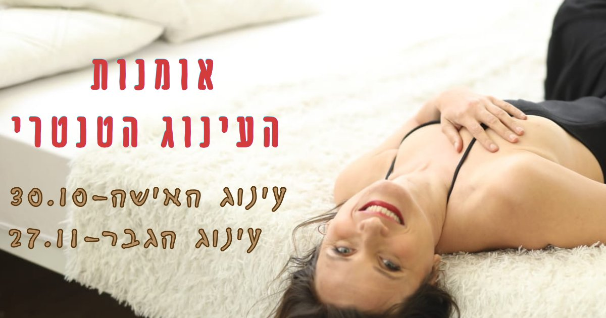
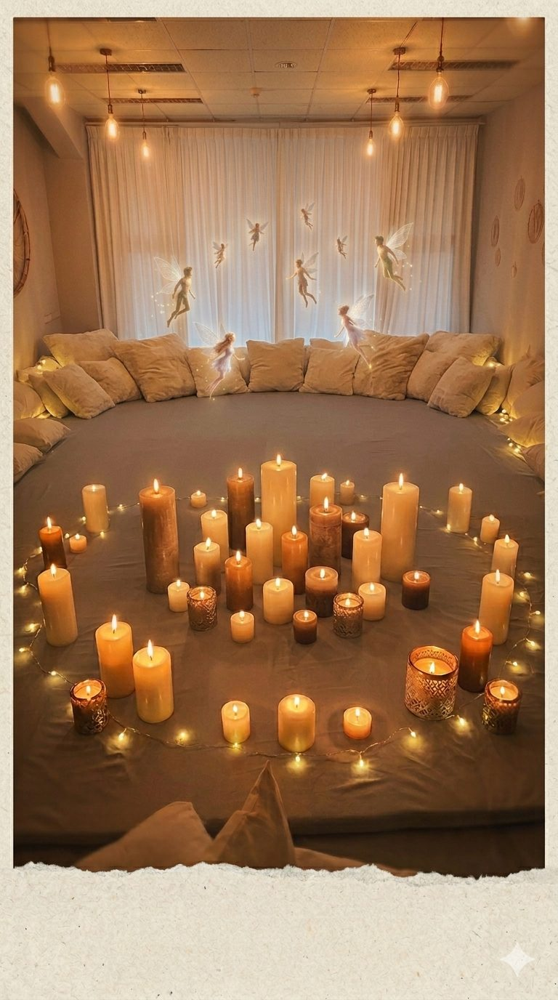
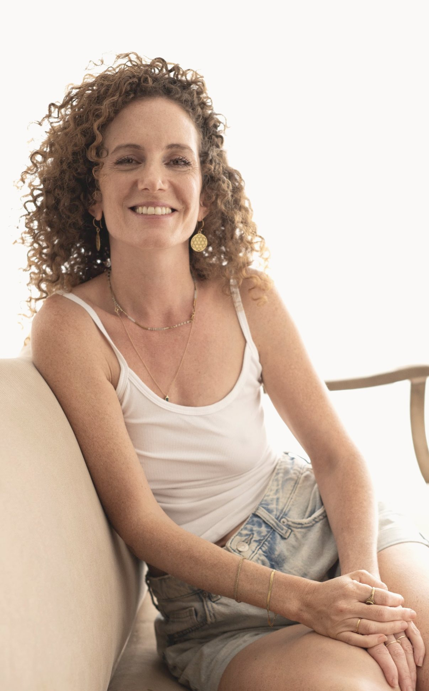

גיליברקן
מלווה יחידים וזוגות בתהליכי ריפוי, חיבור לגוף וללב, למיניות ולאינטימיות, דרך עבודה סומטית וטנטרה תרפיה.
מנחה תהליכים וסדנאות פרטיות בקליניקה בהוד השרון, סדנאות קבוצתיות לזוגות וריטריטים לנשים.

מי אני
נעים מאוד, אני גילי, מנחת טנטרה, בזוגיות אוהבת, אמא לשלושה מתבגרים ואישה שנמצאת כל הזמן בתנועה, בסקרנות ובהתפתחות.
אני יוצרת ומנחה סדנאות וריטריטים לזוגות להעמקת החיבור הזוגי והמיני, מרחבי אהבה טנטריים לחיבורי לב וריטריטים לנשים לריפוי וטרנספורמציה.
הגעתי לעולם הטנטרה מתוך המסע האישי שלי ומתוך סקרנות עמוקה לאפשרות להביא ריפוי לפצעים שלי ולשנות דפוסים, דרך עבודה עם הגוף. בחיים שלי אני חיה אהבה וריפוי, בוחרת שוב ושוב בחופש להיות מי שאני, באהבה שפותחת ומחברת אותי אליי ואל העולם.
הכשרות בתחום
- בוגרת מארג (מיניות, גוף, רגש), ביה"ס המוביל בארץ ללימודי טנטרה ומיניות מודעת, בהנחיית סוג׳יי שמש.
כיום מלווה את ההכשרה. - בוגרת ISTA level 1, באיסלנד.
- לימודי תרפיה בנשימה, בבית הספר לנשימה של נמרוד קאופמן.
- התמקדות וקונסטלציה משפחתית, בהנחיית נגה מייבר.
- לימודי צלילים מרפאים, בהנחיית אורי יבור.

המסע אל הגוף, הלב והמיניות
הטנטרה לימדה אותי שאפשר לפתח מערכת יחסים מיטיבה יותר — עם עצמנו, עם הגוף שלנו, עם הסביבה, בתוך הזוגיות ועם החיים עצמם.
תהליכי העומק שאני מנחה בסדנאות ובקליניקה שלי, מאפשרים לכם לחשוף את הדפוסים הלא־מודעים ואת פצעי הילדות המעצבים את עולמכם הפנימי, את מערכות היחסים שלכם ואת האופן שבו אתם פוגשים את החיים.
דרך עבודה סומטית, ריגשית וחווייתית, ובשילוב טנטרה תרפיה, מובחנות, התמקדות, נשימה, קונסטלציה, צלילים מרפאים- אני מזמינה אתכם לצאת למסע של התעוררות, ריפוי והיכרות מחודשת עם עצמכם.
זהו תהליך של התמרה עמוקה ממנגנוני הגנה לאותנטיות, מתגובות אוטומטיות לבחירה מודעת, מפחד ומריצוי לחופש פנימי, מנוכחות חלקית למפגש מלא עם עצמנו ועם האחר.
במרחב שלי מתאפשרת התפתחות של היכולת לאהוב, להרגיש, לבטא את האמת הפנימית שלנו וליצור מערכות יחסים שיש בהן יותר חופש, אינטימיות, חיבור, עונג, תשוקה וחיבור ללב.
מה זה טנטרה?
טנטרה היא דרך חיים עמוקה של התפתחות והתמרה, המזמינה אותנו לפגוש את החיים במלואם — בגוף, בלב, בתודעה ובמערכות היחסים שלנו.
זוהי הזמנה להתעורר מתוך האוטומט, לזהות את הדפוסים ואת מנגנוני ההגנה שפיתחנו לאורך חיינו, ולהתחיל לנוע בעולם מתוך חופש פנימי, אותנטיות ובחירה מודעת.
דרך עבודה עם הגוף, הנשימה, התחושות והמפגש עם האחר, אנחנו לומדים להשיל בהדרגה את השריון שפיתחנו כדי להגן על עצמנו, ולהעז לפגוש את עצמנו ואת החיים בלב פתוח יותר.
הטנטרה מלמדת אותנו את האמנות להיות רפויים בתוך המציאות, מבלי לאבד את עצמנו בתוכה. להסכים לפגוש את מה שיש, גם כשהוא אינו תואם את הציפיות שלנו; להרגיש מבלי להיסגר, לאהוב מבלי להיאחז, להציב גבולות מבלי להתנתק, ולהישאר נוכחים גם ברגעים של אי־ודאות, פחד, פגיעוּת ושינוי.
זהו מסע מהצורך לשלוט בחיים אל היכולת להשתתף בהם באמת. מהתנהלות מתוך פחד, ריצוי והרגל אל חיבור עמוק יותר לרצון, לאמת ולחיוניות שלנו.
ככל שאנחנו מפתחים נוכחות, מתרחבת היכולת שלנו לפגוש את עצמנו ואת האחר ללא מסכות, להקשיב למה שמתרחש מתחת לפני השטח, וליצור אינטימיות שיש בה חופש, כנות, רכות ותשוקה.
היכולת להיות כאן, בגוף, בלב פתוח, להסכים להרגיש, לפגוש את המציאות כפי שהיא — ולגלות שבתוך המפגש הזה טמון פוטנציאל עמוק לחופש, לחיבור ולאהבה.
המיניות כמרחב של חקירה והתעוררות
במרחב הטנטרי, המיניות היא שער להיכרות עמוקה עם עצמנו, עם האופן שבו אנחנו חווים קרבה, מבטאים רצון, מתמסרים, שומרים על עצמנו ומאפשרים לאחר להתקרב אלינו.
דרך חקירה קשובה של הגוף, הנשימה, התחושות והמפגש האינטימי, אנחנו יכולים לגלות את הדפוסים המעצבים את המיניות שלנו: היכן אנחנו מתאמצים להרשים, מתי ומול מי אנחנו מרצים או בוחרים להתנתק, היכן אנחנו חוששים להיחשף ואיזה חלקים בתוכינו אנחנו בוחרים להסתיר, מה מאפשר לנו להרגיש בטוחים מספיק כדי להתרכך, להיפתח, להתמסר ועוד
החקירה דרך המיניות עוסקת בשאלות עמוקות יותר: עד כמה אנחנו חופשיים להיות מי שאנחנו? האם אנחנו מעזים לבטא את הרצונות שלנו? האם אנחנו מסוגלים להרגיש עונג בלי הישגיות ומטרתיות, להיות באינטימיות בלי לאבד את עצמנו, ולפגוש את האחר בסקרנות במקום מתוך ציפיות והרגלים?
המיניות הופכת כך למרחב חי של מודעות, גילוי וצמיחה — מקום שבו אפשר להתנסות בדרכים חדשות של תקשורת, נוכחות, הקשבה, גבולות, תשוקה וקרבה.
אנחנו מביאים למיטה את מי שאנחנו- את החלק המרצה שלנו, את חוסר הבטחון, את החלק שעסוק בלהוכיח שאנחנו טובים וראויים, את המתחשבן ועוד. דרך המיניות מתאפשר לנו לגלות צללים שקיימים בתוכינו, להעלות מודעות ולצמוח משם אל היותינו אנשים אותנטים, מחוברים וחופשיים מתגובות המנוהלות ע״י פצעי הילדות שלנו במיטה ובחיים עצמם.

מהחקירה אל החיים עצמם
האופן שבו אנחנו פוגשים את החיים הוא במידה רבה גם האופן שבו אנחנו פוגשים את המיניות שלנו — והאופן שבו אנחנו מתנהלים במיניות משקף לא פעם את הדפוסים שמלווים אותנו בחיים עצמם. הצורך בשליטה, הפחד מחשיפה, הנטייה לרצות, הקושי להציב גבולות או להרפות, לצד היכולת להיות נוכחים, לבטא רצון ולהיפתח לאינטימיות.

החיים והמיניות אינם עולמות נפרדים; הם משקפים, מזינים ומעצבים זה את זה. דרך חקירה של המיניות אנחנו יכולים לגלות רבדים עמוקים בעצמנו, לזהות דפוסים שלא תמיד נגישים לנו דרך המחשבה, ולהביא את התובנות האלה אל מערכות היחסים ואל החיים כולם. ובה בעת, ככל שאנחנו מתפתחים, מעמיקים את המודעות שלנו ולומדים לחיות באותנטיות ובחופש רב יותר, כך מתרחבת גם היכולת שלנו לחוות מיניות שיש בה נוכחות, חיבור, תשוקה ואהבה.
בסופו של דבר העבודה הטנטרית מחלחלת אל מערכות היחסים שלנו, אל האופן שבו אנחנו מתקשרים, מתמודדים עם קונפליקטים, מציבים גבולות, מקבלים את עצמנו ופוגשים את העולם.
ככל שאנחנו מפתחים מודעות לגוף ולעולם הפנימי שלנו, אנחנו מקבלים הזדמנות להשתחרר בהדרגה מתגובות אוטומטיות ולפעול מתוך בחירה. אנחנו לומדים להיות פחות מנוהלים על ידי פחד, ביקורת, שליטה, אשמה ובושה ויותר מחוברים לאמת הפנימית שלנו, לאנרגיית החיים וליכולת לאהוב.
מפגשים אישיים בקליניקה
המפגשים האישיים בקליניקה הם מרחב המהווה מעבדה להעמקת ההיכרות עם עצמך, להבנת הדפוסים שמעצבים את חייך, וליצירת אפשרויות חדשות של חופש, חיבור ואהבה.

כל תהליך מתחיל בהקשבה למה שמביא אותך למפגש: קושי שחוזר במערכות יחסים, תחושת תקיעות, ריחוק מהגוף, קושי לבטא רצונות וגבולות, אתגרים במיניות או כמיהה לחיות מתוך יותר אותנטיות, חיוניות ונוכחות. אנחנו מזהים את הדפוסים ואת מנגנוני ההגנה שהתפתחו לאורך החיים, ובוחנים כיצד הם באים לידי ביטוי בהווה. לצד ההבנה המודעת, אנחנו עובדים דרך חוויה ועבודה סומטית, מתוך ההכרה שתנועה חדשה נוצרת דרך עבודה עם הגוף.
המפגשים משלבים, בהתאם לצורך ולמה שעולה בתהליך, כלים מעולמות הטנטרה, ההתמקדות, הנשימה, הקונסטלציה והעבודה הסומטית. אנחנו חוקרים שאלות מהותיות כמו: מה קורה לי כשאני מרגיש דחוי? כיצד אני מגיב כשאני מאבד שליטה? האם אני מסוגל לבטא את רצוני בלי לרצות אחרים? מה מאפשר לי להתרכך ולהיפתח, ומה גורם לי להתכווץ ולהתגונן?
ומתוך החקירה מתפתחת האפשרות ליצור יחס חדש כלפי עצמנו — פחות שיפוטי ונוקשה, יותר קשוב ומקבל. ללמוד לשהות עם רגשות מבלי להיות מוצפים מהם, להקשיב לגוף, לזהות צרכים, לבטא גבולות ולפעול מתוך בחירה במקום מתוך הרגל.
למי המפגשים האישיים מתאימים?
המסע מותאם אישית לכל אדם, לקצב שלו ולמקומות שבהם הוא מבקש להעמיק ולכל אחד שמוכן להתמסר לתהליך עומק ונכונות לפגוש את עצמו בסקרנות ובכנות.
- המפגשים מתאימים לנשים ולגברים המבקשים להעמיק את ההיכרות עם עצמם, להבין מה מניע אותם וליצור שינוי מהותי באופן שבו הם חווים את עצמם, את מערכות היחסים שלהם ואת החיים.
- למי שמזהים דפוסים שחוזרים על עצמם — בזוגיות, במיניות, בתקשורת או ביחס לעצמם — ומבקשים להבין מה נמצא מתחת לפני השטח, מעבר להסברים המוכרים ולפתרונות שכבר ניסו.
- למי שמרגישים שהם מתנהלים מתוך ריצוי, ביקורת עצמית, פחד מדחייה או צורך בשליטה, ומבקשים לפתח חופש פנימי, ביטחון ויכולת לפעול מתוך בחירה ולא מתוך תגובות אוטומטיות.
- למי שמבקשים להעמיק את החיבור לגוף, לרגשות ולרצונות שלהם; ללמוד להקשיב לעצמם, לבטא את האמת שלהם, להציב גבולות ולהיות באינטימיות מבלי לוותר על עצמם.
- למי שרוצים לחקור את המיניות שלהם לעומק — להרחיב את היכולת לחוות עונג ונוכחות, להשתחרר מדפוסי ביצוע וציפיות, ולהתקרב למיניות אותנטית, חופשית ומחוברת יותר.
- וגם אם אינכם בהכרח מתמודדים עם קושי מסוים, אלא מרגישים שיש בכם עוד עומק לגלות, עוד אפשרויות לחוות, רצון להבין את עצמכם טוב יותר ולייצר טרנספורמציה באופן שבו אתם מרגישים, מתנהלים במערכות יחסים, מתקשרים, חווים אינטימיות רגשית ואוהבים.
סדנאות פרטיות לזוגות
נבנות בהתאמה אישית לזוג, בהתאם לצרכים, לכוונות ולמרחב החקירה המבוקש.
זהו מפגש זוגי אינטימי בן שלוש שעות, המוקדש לכם על מנת שתיפגשו מחדש, מתוך סקרנות, נוכחות ולב פתוח.
הסדנה היא הזמנה לגלות אפשרויות חדשות של קרבה, תקשורת, מגע ואינטימיות. דרך עקרונות הטנטרה, נחקור יחד איך אפשר ליצור מרחב זוגי ממקום של חיבור פנימי והדדי, תקשורת, נוכחות ולב פתוח ולהעצים את החופש והתשוקה בקשר שלכם.
במהלך המפגש נתנסה בתרגילים חווייתיים של נשימה ונוכחות, הקשבה עמוקה, תקשורת אותנטית ומפגש דרך מבט ומגע מודע. נחקור את ההבדל בין מגע שמכוון לתוצאה לבין מגע שמאפשר פשוט להרגיש, בין מיניות שמתנהלת מתוך הרגל וציפייה לבין אינטימיות שנוצרת מתוך סקרנות והקשבה לרגע.
נלמד לזהות את הדפוסים שמופיעים בינינו, לתקשר רצונות וגבולות באופן בהיר ופתוח, ולהעמיק את היכולת להיות קרובים מבלי לאבד את עצמנו. ניצור מרחב שמאפשר להאט, להשתחרר מהצורך לבצע או להרשים, ולהקשיב למה שבאמת מתרחש בגוף ובלב.
התרגילים מותאמים אליכם, לקצב שלכם ולמידת הפתיחות שנוחה לכם. אין צורך בניסיון קודם בטנטרה, ואין צורך להגיע עם מטרה מסוימת או עם קושי בזוגיות. נדרשים רק סקרנות ונכונות לחקור יחד. כל התנסות נעשית בהסכמה מלאה, תוך כיבוד הגבולות והרצונות של שניכם.
למי מתאימות הסדנאות הזוגיות?
הסדנא מתאימה לזוגות בכל שלבי הקשר הזוגי.
בסדנא תוכלו ללמוד לבנות יחד קשר המתבסס על שפה משותפת ומיניות בריאה ומודעת.
- לזוגות שמתנסים בטנטרה בפעם הראשונה ורוצים להכיר את העולם הזה יחד, בסקרנות ובפתיחות.
- לזוגות שכבר התנסו בטנטרה והשתתפו בסדנאות, ומרגישים רצון להעמיק ולגלות עוד.
- לזוגות שרוצים להעמיק את האינטימיות ולגלות דרכים חדשות להרגיש קרובים, מחוברים ונוכחים יחד.
- לזוגות שמבקשים להחזיר תשוקה ומשחקיות לקשר, ולצאת מהשגרה אל מרחב של סקרנות והנאה.
- למי שרוצה להכיר את הגוף ואת העונג בצורה חופשית ומודעת.
- לזוגות שרוצים לשפר את התקשורת סביב רצונות, גבולות, מגע וצרכים אישיים.
- לזוגות שרוצים להעניק לעצמם זמן איכות ולצאת מהאוטומט – ליצור מפגש של חיבור, הקשבה, צחוק וגילוי הדדי.
- למי שסקרנים להכניס רוח חדשה לזוגיות ולחקור יחד אפשרויות חדשות של אינטימיות ותשוקה.
- למי שרוצים ללמוד כלים מעשיים שיכולים להמשיך איתם גם אל חיי היומיום, מעבר לסדנא.
סדנאות

Restart · מסע חקירה טנטרי
סדנא יומית לזוגות · עדנים
סדנת טנטרה למתחילים. כל הבייסיק של עולם הטנטרה במרחב רך ובטוח.

אומנות העינוג הטנטרי
סדנאות יום לזוגות · פרדס חנה
סדרת סדנאות לעינוג הגבר ועינוג האישה למימוש הפוטנציאל הזוגי והמיני שלכם. סדנא למתקדמים.

WINTER NIGHTS
מקדש התמסרות · תל אביב
מקדש טנטרי לחיבורי לב ולימוד יסודות מעולם הטנטרה במרחב עדין וחווייתי
המלצות
עברתי אצל גילי טיפול במשך כשנה ואני רוצה להמליץ על גילי בחום עבור מי שמחפש/ת תהליך עבורו. עברתי עם גילי טיפול שהיה מאוד משמעותי עבורי. תהליך בו הכרתי את עצמי יותר לעומק, למדתי לאהוב את עצמי יותר ולדעת שמגיע לי לחיות בשפע ובחופש ולהיות טוב כלפי עצמי ושזה לא על חשבון מישהו אחר. גילי היא מטפלת מקצועית, חכמה, אכפתית, מלאת חמלה, עם מגע קשוב ותומך
אם יש לי טיפ אחד לזוגיות מיטיבה לאורך שנים זה לגלות את עצמכם מחדש כל פעם.
לנסות דברים חדשים בזוגיות ובנפרדות.
אנחנו זוג כזה שאוהב לחקור דברים חדשים, מסקרנים, כאלה שלפעמים מוציאים מאיזור הנוחות.
זה כמו להוסיף עוד קיסם למדורת הזוגיות .
על טנטרה שמעתי לא פעם ולא פעמיים אבל לא מעבר לזה ואז אהובתי ראתה פוסט של גילי המופלאה על סדנת טנטרה זוגית.
מיד נרשמנו!
לא אגלה יותר מידי חוץ מזה שאם אתם רוצים לגלות עוד קצת על עצמכם ועל בן/בת הזוג , להיות באינטימיות שמעולם לא חוויתם עם עצמכם ובן/בת הזוג ובעצם להתחבר לאנרגיה הטבעית של החיים אז אני ממליץ בחום ומכל הלב לגלות את עולם הטנטרה.
וגילי היא הכתובת!
בקיצור, חוויה מהממת וקסומה!
היי גילי
רציתי שתדעי שאת איתי כל הזמן
ובמיוחד בשבוע האחרון שמצאתי את עצמי
"תופסת מקום במרחב",
לא מתקרבנת ודורשת מה שמגיע לי בלי להתנצל
והיה לי ברור שבלי המפגשים איתך לא הייתי במקום שבו אני נמצאת היום
אז תודה
הי גילי, רציתי כבר הרבה זמן להגיד לך שהתהליך שעברנו היה לי משמעותי ממש
גילי יקרה
ניתקלתי בפירסום שלך בפייסבוק,כתבת כך:
"זו הזמנה עבורך להתעוררות,
להתחיל לחיות את החיים שלך בתשוקה,
להגביר את האנרגיה של אהבה סביבך ולהפיץ את האור שלך בעולם הזה"
וכך פעם היתי
ומשהו כבה אצלי בדרך.
אז נירשמתי ועל כך אהיה אסירת תודה לעולם⚘️
האור שבך,הרוגע והרוך,האנרגיה שלך,הידע והדרך בה העברת לנו ממנו,האירו בי את האור שכבה,חיכיתי כל שבוע למפגש,למדתי ממך כל כך הרבה⚘️⚘️
תמשיכי להפיץ את כל הטוב הזה לעולם שללא ספק יהיה מקום הרבה יותר טוב בזכותך
תודה לך ועלייך
כבר מתגעגעת
